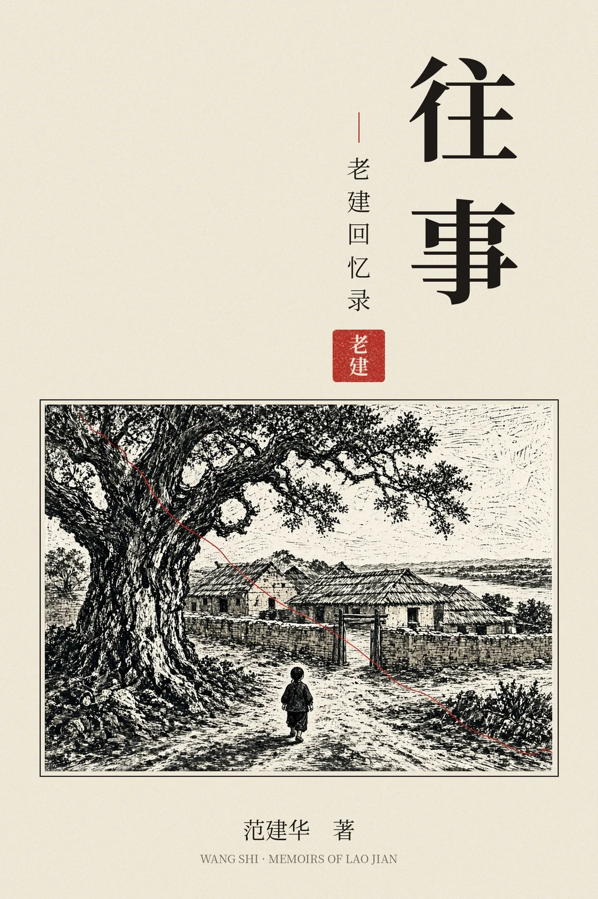
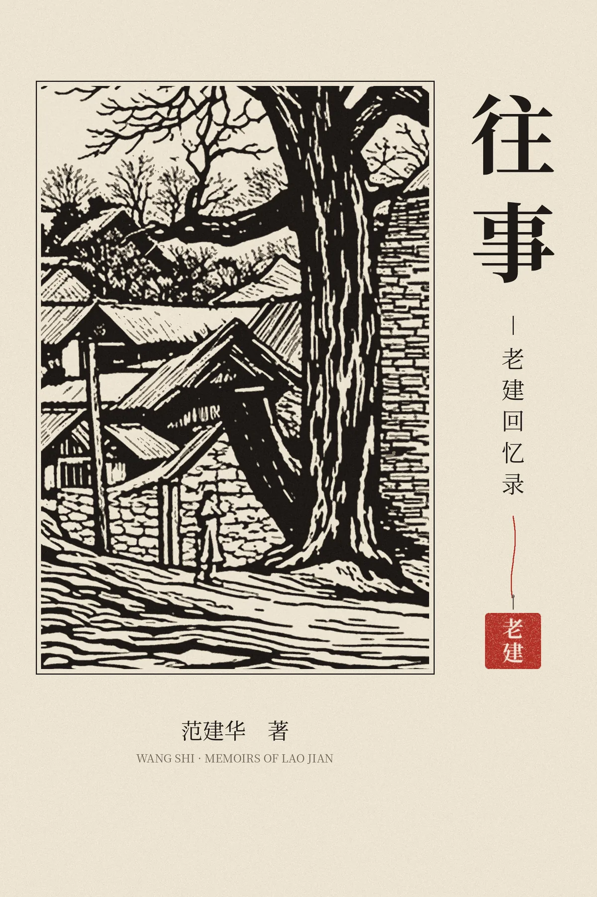

老
建
往事
版权页
字号
夜读
目录
关闭 ✕
封面
序言
序
自序
往事
一 范氏家族
二 我的祖父母
三 大爷爷一家
四 三爷爷一家
五 我们家
六 母亲的冤案
七 挣扎
八 童年记忆
九 少年时代
十 灰色青春
十一 拨云见日
十二 沉重年代
十三 回归
生活纪事
一 沙果大王赵子洪
二 白老歪
三 黄二爷
四 杨友德
五 张书华的苦恼
六 大老妈的牌坊
七 高维刚
八“大干苦干加二十三干”
九 工业大检查
后记
后记
附
画卷
版权页
往事
老建回忆录
责任编辑：文刃
文字编辑：海边 文刃
封面设计：清音
图片提供：老建
出版印刷：Canada Max Printing
版次： 2022年2月多伦多第一版第一次印刷
字数： 54千字
开本： 14.6cm × 22.2cm
ISBN: 978-1-7779335-1-7
定价： $30
Copyright©2022老建
版权所有，侵权必究

封面一

封面二